以下是可以在122.0.65.73 23333端口使用的先行卡的列表。下载补丁后即可使用。
使用方法：原版游戏下载补丁后解压至游戏文件夹，手机党请自定义数据库（方法请查看压缩包内使用说明），暂不支持游侠版游戏，静水版游戏无需使用。
资料来源：任天堂世界论坛，@Solari_28。
脚本作者：YGOPRO，ygohack137，SalvationDevelopment，Ygopro.co，Eerie Code，以及其他公开发布的先行卡脚本的作者。
星星图标是Yusuke Kamiyamane的作品。
数据整理：Loki。
提示：电脑上安装本次补丁前，请先删除expansions文件夹，否则会出现卡片重复的现象。
更新记录
- 2016-01-11 00:33
- 修复：青色眼睛的祭司回收效果不处理的问题。
- 2016-01-10 22:50
- 新卡：月光红狐。
- 更新：908全卡更新清晰卡图，更换为正式密码，修正及更新一些脚本。
- 2016-01-09 11:24
- 修复：浮幽樱发动次数无限制的问题。
- 修复：真龙的觉醒不能被神之警告的问题。
- 修复：无形阵·假面可以使用等级合计大于8的怪兽的问题。
- 修复：多张无形噬体溶解可多次发动2效果的问题。
- 2016-01-08 18:18
- 修复：青眼精灵龙等卡文本出现问号的问题。需重新下载补丁。
- 2016-01-08 16:09
- 修复：无形阵·假面无法抽卡的问题。
- 2016-01-08 00:54
- 新卡：22张新卡，908全卡已更新！
- 修复：迪隆的铁骑兵无法发动到灵摆区的问题。
- 修复：月光轮回舞踊场合无法发动的问题。
- 2016-01-03 11:28
- 修复：光之灵堂2效果在效果处理时被破坏仍有效的问题。
- 2016-01-02 23:57
- 修复：仁王立只能选择守备表示怪兽的问题，以及回合结束时攻击力变0效果开连锁的问题。
- 修复：复活之福音能代替灵摆区域卡的破坏的问题。
- 2016-01-01 22:45
- 新卡：修禅僧 元道、龙大神、TCG907大怪兽新卡3张。
- 修复：水晶翼同调龙未能破坏怪兽也加攻击力的问题。
- 修复：青色眼睛的贤士可以检索1星以外怪兽的问题。
卡片列表
| 卡图 | 卡名 | 效果 |
|---|---|---|
 | 邪神官 契伦·沙巴 | [怪兽|效果] 爬虫类/暗 [★8] 2500/0 「邪神官 契伦·沙巴」的②的效果1回合只能使用1次。 ①：自己手卡是5张以上的场合，这张卡可以不用解放作召唤。 ②：这张卡被战斗破坏送去墓地时才能发动。这张卡从墓地守备表示特殊召唤。这个效果特殊召唤的这张卡当作调整使用。 |
 | 银河蠕虫 | [怪兽|效果] 昆虫/光 [★3] 1200/1000 ①：这张卡召唤成功时，自己场上没有这张卡以外的怪兽存在的场合才能发动。从卡组把1只3星以下的「银河」效果怪兽特殊召唤。这个效果特殊召唤的怪兽的效果无效化。 |
| 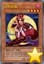 | 月光紅狐 | [怪兽|效果] 兽战士/暗 [★4] 1800/600 ①：这张卡被效果送去墓地的场合，以对方场上1只表侧表示怪兽为对象才能发动。那只怪兽的攻击力直到回合结束时变成0。 ②：自己场上的「月光」怪兽为对象的魔法·陷阱·怪兽的效果发动时，把墓地的这张卡除外才能发动。那个发动无效，双方玩家回复1000基本分。 |
 | 破灭龙 甘多拉X | [怪兽|效果] 龙/暗 [★8] 0/0 ①：这张卡从手卡的召唤·特殊召唤成功时才能发动。这张卡以外的场上的怪兽全部破坏，给与对方破坏的怪兽之内攻击力最高的怪兽的攻击力数值的伤害。这张卡的攻击力变成和这个效果给与对方的伤害相同数值。 ②：自己结束阶段发动。自己基本分变成一半。 |
 | 暗黑骑士 盖亚王 | [怪兽|效果] 战士/地 [★7] 2300/2100 ①：对方场上有怪兽存在，自己场上没有怪兽存在的场合，这张卡可以从手卡特殊召唤。 ②：1回合1次，比这张卡攻击力高的怪兽在对方场上特殊召唤的场合才能发动。这张卡的攻击力直到回合结束时上升700。 |
 | 柠檬魔术少女 | [怪兽|效果] 魔法师/光 [★2] 800/600 ①：1回合1次，把「柠檬魔术少女」以外的自己场上1只「魔术少女」怪兽解放才能发动。从卡组把1只魔法师族怪兽加入手卡。 ②：1回合1次，这张卡被选择作为攻击对象的场合才能发动。从手卡把1只魔法师族怪兽效果无效特殊召唤。那之后，攻击对象转移为那只怪兽，攻击怪兽的攻击力变成一半。 |
 | 精灵圣剑士 | [怪兽|效果] 战士/地 [★4] 2100/700 这张卡在规则上也当作「精灵剑士」卡使用。 ①：自己手卡是1张以上的场合，这张卡不能攻击。 ②：1回合1次，自己主要阶段才能发动。从手卡把1只「精灵剑士」怪兽特殊召唤。 ③：这张卡的攻击给与对方战斗伤害时才能发动。自己从卡组抽出自己场上的「精灵剑士」怪兽的数量。 |
| 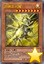 | 巨神龙 闪耀 | [怪兽|效果] 龙/光 [★8] 2800/2800 ①：这张卡从墓地的特殊召唤成功的场合，以对方的场上·墓地1只怪兽为对象才能发动。那只怪兽除外，这张卡的攻击力·守备力上升除外的那只怪兽的等级或者阶级×100。 ②：这张卡战斗破坏对方怪兽的场合，以「巨神龙 闪耀」以外的自己或者对方的墓地1只7·8星的龙族怪兽为对象才能发动。那只怪兽在自己场上特殊召唤。 |
| 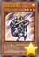 | 巨龙之圣骑士 | [怪兽|效果] 战士/光 [★4] 1700/300 ①：这张卡召唤·特殊召唤成功的场合才能发动。从自己的手卡·卡组把1只7·8星的龙族怪兽当作装备卡使用给这张卡装备。 ②：有装备卡装备的这张卡不受其他怪兽的效果影响。 ③：把自己场上1只怪兽和这张卡解放，以自己墓地1只7·8星的龙族怪兽为对象才能发动。那只怪兽特殊召唤。 |
| 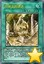 | 巨神龙的遗迹 | [魔法|永续] ①：自己场上有7·8星的龙族怪兽存在，从墓地以外有怪兽特殊召唤的场合发动。那些怪兽的效果直到回合结束时无效化。 ②：1回合1次，把这张卡以外的自己场上1张表侧表示的卡送去墓地才能发动。在自己场上把1只「巨龙衍生物」（龙族·光·1星·攻/守0）特殊召唤。 ③：这张卡在墓地存在的场合，把自己的手卡·场上1只7·8星的龙族怪兽送去墓地才能发动。这张卡加入手卡。 |
| 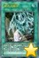 | 复活之福音 | [魔法] ①：以自己墓地1只7·8星的龙族怪兽为对象才能发动。那只怪兽特殊召唤。 ②：自己场上的龙族怪兽被战斗·效果破坏的场合，可以作为代替把墓地的这张卡除外。 |
 | 古生物 林乔利虫 | [陷阱] ①：以除外的1张自己或者对方的卡为对象才能发动。那张卡回到墓地。 ②：场上的陷阱卡发动时，连锁那个发动这个效果才能从墓地发动。这张卡变成通常怪兽（水族·水·2星·攻1200/守0）在怪兽区域特殊召唤（不当作陷阱卡使用）。这个效果特殊召唤的这张卡不受怪兽的效果影响，从场上离开的场合除外。 |
| 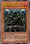 | 星兹飞行突击队 | [怪兽|效果] 念动力/暗 [★3] 1000/1000 在自己或者对方回合：可以把这张卡除外；从手卡把1只4星以上的「星兹」怪兽特殊召唤。「星兹飞行突击队」的这个效果1回合只能使用1次。1回合1次：可以支付1000基本分，之后选择自己墓地1只念动力族「星兹」怪兽；那只怪兽特殊召唤。 |
 | 古生物 伊尔东钵 | [陷阱] ①：以场上1只表侧表示怪兽为对象才能发动。那只怪兽的攻击力·守备力直到回合结束时上升500。 ②：场上的陷阱卡发动时，连锁那个发动这个效果才能从墓地发动。这张卡变成通常怪兽（水族·水·2星·攻1200/守0）在怪兽区域特殊召唤（不当作陷阱卡使用）。这个效果特殊召唤的这张卡不受怪兽的效果影响，从场上离开的场合除外。 |
| 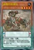 | 迪隆的铁骑兵 | [怪兽|效果|灵摆] 恐龙/地 [★4] 1600/2600 5/5 ←5 【灵摆】 5→ 【怪兽效果】 这张卡和灵摆怪兽进行战斗的伤害步骤开始时：这张卡的攻击力·守备力直到伤害步骤结束时变成一半。 |
| 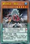 | 雾动机龙·棘龙 | [怪兽|效果|灵摆] 机械/水 [★5] 2500/1800 3/3 ←3 【灵摆】 3→ ①：这张卡以外的自己场上的「雾动机龙」卡被战斗或者对方的效果破坏的场合，可以作为代替把这张卡破坏。 【怪兽效果】 ①：可以把这张卡以外的自己场上1只「雾动机龙」怪兽解放，从以下效果选择1个发动。 ●这个回合，这张卡可以直接攻击。 ●这个回合，这张卡在同1次的战斗阶段中可以作2次攻击。 |
| 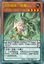 | 无形噬体·傲慢 | [怪兽|效果|灵摆] 龙/地 [★4] 1750/0 3/3 ←3 【灵摆】 3→ 这张卡的控制者在每次自己准备阶段把自己场上1只怪兽解放。或者不解放让这张卡破坏。 ①：只要自己场上有「无形噬体」怪兽存在，双方受到的效果伤害变成0。 【怪兽效果】 ①：只要灵摆召唤·反转过的这张卡在怪兽区域存在，双方不是「无形噬体」怪兽不能从额外卡组特殊召唤。 |
| 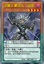 | 龙魔王 霸道矢·灵摆 | [怪兽|效果|灵摆] 龙/暗 [★4] 1950/0 5/5 ←5 【灵摆】 5→ ①：只要这张卡在灵摆区域存在，对方场上的表侧表示的灵摆怪兽的效果无效化。 【怪兽效果】 ①：这张卡和灵摆怪兽进行战斗的伤害步骤开始时发动。那只怪兽和这张卡破坏。 |
| 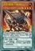 | 无形噬体·强欲 | [怪兽|效果|灵摆] 龙/地 [★4] 0/1950 3/3 ←3 【灵摆】 3→ 这张卡的控制者在每次自己准备阶段把自己场上1只怪兽解放。或者不解放让这张卡破坏。 ①：只要自己场上有「无形噬体」怪兽存在，双方不能把「无形噬体」卡以外的陷阱卡的效果发动。 【怪兽效果】 ①：只要灵摆召唤·反转过的这张卡在怪兽区域存在，双方不是「无形噬体」怪兽不能从额外卡组特殊召唤。 |
| 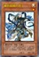 | 青色眼睛的贤士 | [怪兽|效果|调整] 魔法师/光 [★1] 0/1500 「青色眼睛的贤士」的②的效果1回合只能使用1次。 ①：这张卡召唤成功时才能发动。从卡组把「青色眼睛的贤士」以外的1只光属性·1星调整加入手卡。 ②：把这张卡从手卡丢弃，以自己场上1只效果怪兽为对象才能发动。那只怪兽送去墓地，从卡组把1只「青眼」怪兽特殊召唤。 |
| 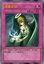 | 天使之泪 | [陷阱] ①：选自己1张手卡加入对方手卡。那之后，自己回复2000基本分。 |
 | 急袭猛禽-复仇秃鹫 | [怪兽|效果] 鸟兽/暗 [★4] 1700/100 ①：自己因战斗·效果受到伤害的场合才能发动。这张卡从手卡特殊召唤。这个效果的发动后，直到回合结束时自己不是「急袭猛禽」怪兽不能从额外卡组特殊召唤。 |
| 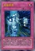 | 光虫异变 | [陷阱] 「光虫异变」在1回合只能发动1张。 ①：以自己墓地2只昆虫族·3星怪兽为对象才能发动。那些怪兽特殊召唤。这个效果特殊召唤的怪兽的效果无效化。 ②：从自己墓地把这张卡和1只超量怪兽除外才能发动。自己场上的全部昆虫族·3星怪兽的等级直到回合结束时变成和除外的超量怪兽的阶级相同数值的等级。这个效果的发动后，直到回合结束时自己不是昆虫族怪兽不能特殊召唤。 |
| 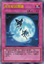 | 月光轮回舞踊 | [陷阱] 「月光轮回舞踊」在1回合只能发动1张。 ①：自己场上的怪兽被战斗·效果破坏的场合才能发动。从卡组把最多2只「月光」怪兽加入手卡。 |
| 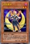 | 月光黑羊 | [怪兽|效果] 兽战士/暗 [★2] 100/600 ①：可以把这张卡从手卡丢弃，从以下效果选择1个发动。 ●选「月光黑羊」以外的自己墓地1只「月光」怪兽加入手卡。 ●从卡组把1张「融合」加入手卡。 ②：这张卡成为融合召唤的素材送去墓地的场合才能发动。选「月光黒羊」以外的1只自己的额外卡组的表侧表示的「月光」灵摆怪兽或者自己墓地的「月光」怪兽加入手卡。 |
| 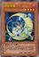 | 月光苍猫 | [怪兽|效果] 兽战士/暗 [★4] 1600/1200 「月光苍猫」的①的效果1回合只能使用1次。 ①：这张卡特殊召唤成功的场合，以「月光苍猫」以外的自己场上1只「月光」怪兽为对象才能发动。那只怪兽的攻击力直到回合结束时变成原本攻击力的2倍。 ②：场上的这张卡被战斗·效果破坏的场合才能发动。从卡组把1只「月光」怪兽特殊召唤。 |
 | 极强音 | [魔法|永续] ①：1回合1次，以自己场上1只「幻奏」怪兽为对象才能把这个效果发动。那只怪兽的攻击力直到下次的自己准备阶段上升800。 ②：把魔法与陷阱区域的表侧表示的这张卡送去墓地才能发动。「幻奏」融合怪兽卡决定的融合素材怪兽从自己场上送去墓地，把那1只融合怪兽从额外卡组融合召唤。 |
| 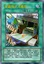 | 文具电子人基地 | [魔法|场地] ①：场上的「文具电子人」怪兽的攻击力·守备力上升500。 ②：1回合1次，自己主要阶段才能发动。手卡的「文具电子人」卡任意数量给对方观看，回到卡组洗切。那之后，自己从卡组抽出回到卡组的数量。 ③：把「文具电子人基地」以外的自己的场上·墓地的「文具电子人」卡9种类各1张除外才能发动。对方的手卡·场上·墓地的卡全部回到持有者卡组。 |
| 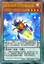 | 娱乐伙伴 灯泡萤火虫 | [怪兽|效果|灵摆] 昆虫/光 [★4] 1200/1600 5/5 ←5 【灵摆】 5→ ①：1回合1次，对方怪兽的攻击宣言时把自己场上1只「娱乐伙伴」怪兽解放才能发动。那次攻击无效，那之后战斗阶段结束。 【怪兽效果】 ①：只要这张卡在怪兽区域存在，自己场上的「娱乐伙伴」怪兽或者「异色眼」怪兽攻击的场合，对方直到伤害步骤结束时魔法·陷阱卡不能发动。 |
| 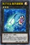 | 电子光虫-散热器蜣螂 | [怪兽|效果|超量] 昆虫/光 [☆3] 1800/1400 昆虫族·光属性3星怪兽×2只以上 ①：1回合1次，把这张卡2个超量素材取除，以对方场上1只怪兽为对象才能发动。那只怪兽的表示形式变更，那个效果直到回合结束时无效。这个效果在对方回合也能发动。 ②：1回合1次，这张卡战斗破坏对方怪兽送去墓地时才能发动。破坏的那只怪兽在这张卡下面重叠作为超量素材。 |
| 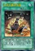 | 仪式的事前准备 | [魔法] 「仪式的事前准备」在1回合只能发动1张。 ①：从卡组选1张仪式魔法卡，并且再从自己的卡组·墓地选1只在那张仪式魔法卡有卡名记述的仪式怪兽。那2张卡加入手卡。 |
| 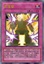 | 仁王立 | [陷阱] 「仁王立」在1回合只能发动1张。 ①：以场上1只表侧表示怪兽为对象才能发动。那只怪兽的守备力变成2倍，回合结束时那个守备力变成0。 ②：把墓地的这张卡除外，以自己场上1只怪兽为对象才能发动。这个回合，对方只能向作为对象的怪兽攻击。 |
| 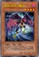 | 黑羽-吊风之戴思 | [怪兽|效果|调整] 鸟兽/暗 [★4] 1000/1000 「黑羽-吊风之戴思」的①的效果1回合只能使用1次。 ①：这张卡召唤·特殊召唤成功时，可以以自己场上1只「黑羽」怪兽为对象，从以下效果选择1个发动。 ●作为对象的怪兽的等级上升1星。 ●作为对象的怪兽的等级下降1星。 ②：这张卡被送去墓地的回合的结束阶段发动。自己受到1000伤害。 |
| 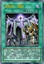 | 无形阵·假面 | [魔法|场地] ①：场上的「无形噬体」怪兽的攻击力·守备力上升300。 ②：只要这张卡在场地区域存在，每次自己场上的「无形噬体」怪兽被解放让自己从卡组抽1张。这个效果1回合可以适用最多2次。 ③：把墓地的这张卡除外才能发动。从自己的手卡·场上把等级合计直到8的灵摆怪兽解放，从手卡把「虚龙魔王 无形矢·心灵」仪式召唤。 |
 | 强袭黑羽-泪雨之千鸟刀鸟 | [怪兽|效果|同调] 鸟兽/暗 [★7] 2600/2000 调整＋调整以外的怪兽1只以上 ①：「黑羽」怪兽为素材作同调召唤的这张卡当作调整使用。 ②：这张卡的攻击力上升自己墓地的「黑羽」怪兽数量×300。 ③：这张卡被破坏送去墓地时，以「强袭黑羽-泪雨之千鸟刀鸟」以外的自己墓地1只鸟兽族同调怪兽为对象才能发动。那只怪兽特殊召唤。 |
| 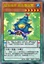 | 娱乐伙伴 房东寄居蟹 | [怪兽|效果|灵摆] 水/水 [★5] 500/2500 2/2 ←2 【灵摆】 2→ ①：1回合1次，自己的「娱乐伙伴」怪兽被战斗破坏时，以自己的灵摆区域1张「娱乐伙伴」卡或者「异色眼」卡为对象才能发动。那张卡特殊召唤。 【怪兽效果】 ①：1回合1次，以自己场上1只灵摆怪兽为对象才能发动。那只怪兽的攻击力直到回合结束时上升自己场上的「娱乐伙伴」怪兽数量×300。 |
| 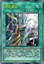 | 光之灵堂 | [魔法|场地] ①：只要这张卡在场地区域存在，自己在通常召唤外加上只有1次，自己主要阶段可以把1只光属性·1星调整召唤。 ②：1回合1次，以自己场上1只表侧表示怪兽为对象才能发动。从手卡·卡组把1只通常怪兽送去墓地。作为对象的怪兽的攻击力·守备力直到回合结束时上升送去墓地的怪兽的等级×100。 ③：把墓地的这张卡除外才能发动。从卡组把1张「毁灭之爆裂疾风弹」加入手卡。 |
| 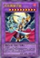 | 月光舞狮子姬 | [怪兽|效果|融合] 兽战士/暗 [★10] 3500/3000 「月光舞豹姬」＋「月光」怪兽×2 这张卡用以上记的卡为融合素材的融合召唤才能特殊召唤。 ①：这张卡不会成为对方的效果的对象，不会被对方的效果破坏。 ②：这张卡在同1次的战斗阶段中可以作2次攻击。 ③：1回合1次，这张卡向怪兽攻击的伤害步骤结束时才能发动。对方场上的特殊召唤的怪兽全部破坏。 |
| 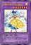 | 幻奏的华歌圣 花之普莉玛 | [怪兽|效果|融合] 天使/光 [★7] 1900/2000 「幻奏的音姬」怪兽＋「幻奏」怪兽1只以上 ①：这张卡的攻击力上升作为这张卡的融合素材的怪兽数量×300。 ②：这张卡在同1次的战斗阶段中可以作2次攻击。 ③：融合召唤的这张卡被送去墓地的场合，以自己墓地1只「幻奏」怪兽为对象才能发动。那只怪兽加入手卡。 |
 | 古生物 皮卡虫 | [陷阱] ①：从手卡丢弃1张「古生物」卡。那之后，自己从卡组抽2张。 ②：场上的陷阱卡发动时，连锁那个发动这个效果才能从墓地发动。这张卡变成通常怪兽（水族·水·2星·攻1200/守0）在怪兽区域特殊召唤（不当作陷阱卡使用）。这个效果特殊召唤的这张卡不受怪兽的效果影响，从场上离开的场合除外。 |
| 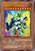 | 文具电子人009 | [怪兽|效果] 机械/地 [★9] 500/500 ①：1回合1次，自己主要阶段1才能发动。这张卡的攻击力直到对方回合结束时上升「文具电子人009」以外的自己场上的「文具电子人」怪兽的攻击力的合计数值。这个效果发动的回合，不用这张卡不能攻击。 ②：这张卡进行战斗的场合，对方直到伤害步骤结束时魔法·陷阱·怪兽的效果不能发动。 ③：这张卡被战斗·效果破坏的场合，可以作为代替把自己场上1张「文具电子人」卡破坏。 |
| 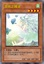 | 里风之精灵 | [怪兽|效果] 天使/风 [★4] 1800/900 ①：这张卡召唤成功的场合才能发动。从卡组把1只反转怪兽加入手卡。 |
| 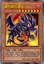 | 真红眼卡通龙 | [怪兽|效果|卡通] 龙/暗 [★7] 2400/2000 ①：这张卡在召唤·反转召唤·特殊召唤的回合不能攻击。 ②：自己场上有「卡通世界」存在，对方场上没有卡通怪兽存在的场合，这张卡可以直接攻击。 ③：1回合1次，自己主要阶段才能发动。从手卡把「真红眼卡通龙」以外的1只卡通怪兽无视召唤条件特殊召唤。 |
| 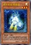 | 电子光虫-电容茧 | [怪兽|效果] 昆虫/光 [★3] 0/2000 把这张卡作为超量召唤的素材的场合，不是昆虫族怪兽的超量召唤不能使用。 ①：1回合1次，这张卡在场上攻击表示存在的场合，以自己墓地1只昆虫族·3星怪兽为对象才能发动。这张卡变成守备表示，作为对象的怪兽守备表示特殊召唤。 ②：场上的这张卡为素材作超量召唤的怪兽得到以下效果。 ●这张卡向守备表示怪兽攻击的场合，对方直到伤害步骤结束时魔法·陷阱·怪兽的效果不能发动。 |
| 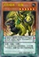 | 无形噬体·怠惰 | [怪兽|效果|灵摆] 龙/地 [★6] 2250/0 3/3 ←3 【灵摆】 3→ 这张卡的控制者在每次自己准备阶段把自己场上1只怪兽解放。或者不解放让这张卡破坏。 ①：只要自己场上有「无形噬体」怪兽存在，双方不能用抽卡以外的方法从卡组把卡加入手卡。 【怪兽效果】 ①：只要这张卡在怪兽区域存在，双方不是「无形噬体」怪兽不能从额外卡组特殊召唤。 |
| 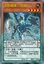 | 无形噬体·忧郁 | [怪兽|效果|灵摆] 龙/地 [★4] 0/2050 5/5 ←5 【灵摆】 5→ 这张卡的控制者在每次自己准备阶段把自己场上1只怪兽解放。或者不解放让这张卡破坏。 ①：只要自己场上有「无形噬体」怪兽存在，双方不能把魔法·陷阱·怪兽的效果连锁发动。 【怪兽效果】 ①：只要灵摆召唤·反转过的这张卡在怪兽区域存在，双方不是「无形噬体」怪兽不能从额外卡组特殊召唤。 |
| 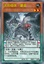 | 无形噬体·暴食 | [怪兽|效果|灵摆] 龙/地 [★2] 0/1850 5/5 ←5 【灵摆】 5→ 这张卡的控制者在每次自己准备阶段把自己场上1只怪兽解放。或者不解放让这张卡破坏。 ①：只要自己场上有「无形噬体」怪兽存在，双方不能把「无形噬体」怪兽以外的怪兽的效果发动。 【怪兽效果】 ①：只要灵摆召唤·反转过的这张卡在怪兽区域存在，双方不是「无形噬体」怪兽不能从额外卡组特殊召唤。 |
 | 古生物 拟油栉虫 | [陷阱] ①：以场上1张魔法·陷阱卡为对象才能发动。那张卡破坏。 ②：场上的陷阱卡发动时，连锁那个发动这个效果才能从墓地发动。这张卡变成通常怪兽（水族·水·2星·攻1200/守0）在怪兽区域特殊召唤（不当作陷阱卡使用）。这个效果特殊召唤的这张卡不受怪兽的效果影响，从场上离开的场合除外。 |
| 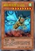 | 鳞粉大怪兽 盖达拉 | [怪兽|效果] 昆虫/风 [★8] 2700/1600 可以把对方场上1只怪兽解放，从手卡把这张卡在对方场上攻击表示特殊召唤。对方场上有「大怪兽」怪兽存在的场合，可以从手卡把这张卡攻击表示特殊召唤。「大怪兽」怪兽在自己场上只能有1只表侧表示存在。1回合1次，在自己或者对方回合：可以把场上3个大怪兽指示物取除；这张卡以外的场上的怪兽的攻击力·守备力变成一半。 |
 | 古生物 欧巴宾海蝎 | [怪兽|效果|超量] 水/水 [☆2] 0/2400 2星怪兽×2 「古生物 欧巴宾海蝎」的③的效果1回合只能使用1次。 ①：这张卡不受其他怪兽的效果影响。 ②：只要这张卡在怪兽区域存在，自己的「古生物」陷阱卡的发动从手卡也能用。 ③：这张卡有陷阱卡在作为超量素材的场合，把这张卡1个超量素材取除才能发动。从卡组把1张「古生物」陷阱卡加入手卡。 |
| 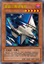 | 星兹三角穿梭机 | [怪兽|效果] 机械/暗 [★5] 2000/2000 1回合1次：可以从卡组把1只「星兹」怪兽送去墓地，之后选择场上1只表侧表示怪兽；那只怪兽的攻击力·守备力下降送去墓地的那只怪兽的等级×100。这张卡被战斗或者卡的效果破坏送去墓地的场合：可以把墓地的这张卡除外；从卡组把1只4星以下的「星兹」怪兽特殊召唤。 |
 | 古生物 足杯虫 | [陷阱] ①：以场上1张表侧表示的卡为对象才能发动。丢弃1张手卡，作为对象的卡除外。 ②：场上的陷阱卡发动时，连锁那个发动这个效果才能从墓地发动。这张卡变成通常怪兽（水族·水·2星·攻1200/守0）在怪兽区域特殊召唤（不当作陷阱卡使用）。这个效果特殊召唤的这张卡不受怪兽的效果影响，从场上离开的场合除外。 |
| 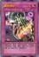 | 究极的神意 | [陷阱|反击] 怪兽的效果·魔法·陷阱卡发动时：丢弃1张和那张卡相同种类（怪兽·魔法·陷阱）的手卡；那个发动无效，破坏那张卡。 |
 | 白色灵龙 | [怪兽|效果] 龙/光 [★8] 2500/2000 这张卡在规则上也当作「青眼」卡使用。 ①：这张卡只要在手卡·墓地存在，当作通常怪兽使用。 ②：这张卡召唤·特殊召唤成功时，以对方场上1张魔法·陷阱卡为对象才能发动。那张卡除外。 ③：对方场上有怪兽存在的场合，把这张卡解放才能发动。从手卡把1只「青眼白龙」特殊召唤。这个效果在对方回合也能发动。 |
| 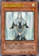 | 青色眼睛的祭司 | [怪兽|效果|调整] 魔法师/光 [★1] 300/1200 「青色眼睛的祭司」的②的效果1回合只能使用1次。 ①：这张卡召唤成功时，以自己墓地1只光属性·1星调整为对象才能发动。那只怪兽加入手卡。 ②：让墓地的这张卡回到卡组，以自己场上1只效果怪兽为对象才能发动。那只怪兽送去墓地，从自己墓地选那只怪兽以外的1只「青眼」怪兽特殊召唤。 |
| 友方误射 | [陷阱] ①：对方的魔法·陷阱·怪兽的效果发动时，以那张卡以外的场上1张卡为对象才能发动。作为对象的卡破坏。 | |
| 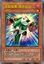 | 急袭猛禽-痛苦伯劳 | [怪兽|效果] 鸟兽/暗 [★1] 100/100 「急袭猛禽-痛苦伯劳」的效果1回合只能使用1次，把这张卡作为超量召唤的素材的场合，不是鸟兽族怪兽的超量召唤不能使用。 ①：这张卡在手卡存在的场合，以自己场上1只「急袭猛禽」怪兽为对象才能发动。自己受到那只怪兽的攻击力或守备力之内较低方数值的伤害，这张卡从手卡特殊召唤。这个效果特殊召唤的这张卡的等级变成和作为对象的怪兽的等级相同。 |
| 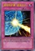 | 波纹防护罩 -波浪之力- | [陷阱] ①：对方怪兽的直接攻击宣言时才能发动。对方场上的攻击表示怪兽全部回到持有者卡组。 |
| 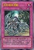 | 无形噬体溶解 | [陷阱|永续] 「无形噬体溶解」的②的效果1回合只能使用1次。 ①：「无形噬体」怪兽以外的场上的怪兽的攻击力·守备力下降场上的「无形噬体」卡数量×100。 ②：自己的灵摆区域的卡被破坏的场合才能发动。从卡组选1只「无形噬体」灵摆怪兽在自己的灵摆区域放置。 |
| 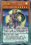 | 月光狼 | [怪兽|效果|灵摆] 兽战士/光 [★6] 2000/1800 1/1 ←1 【灵摆】 1→ ①：自己不是「月光」怪兽不能灵摆召唤。这个效果不会被无效化。 ②：1回合1次，自己主要阶段才能发动。从自己的场上·墓地把「月光」融合怪兽卡决定的融合素材怪兽除外，把那1只融合怪兽从额外卡组融合召唤。 【怪兽效果】 ①：只要这张卡在怪兽区域存在，自己的「月光」怪兽向守备表示怪兽攻击的场合，给与对方为攻击力超过那个守备力的数值的战斗伤害。 |
| 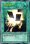 | 无念的手札 | [魔法|永续] ①：只要这张卡在魔法与陷阱区域存在，双方的手卡限制数量变成3张。 |
| 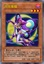 | 月光紫蝶 | [怪兽|效果] 兽战士/暗 [★3] 1000/1000 「月光紫蝶」的②的效果1回合只能使用1次。 ①：把自己的手卡·场上的这张卡送去墓地，以自己场上1只「月光」怪兽为对象才能发动。那只怪兽的攻击力直到回合结束时上升1000。 ②：把墓地的这张卡除外才能发动。从手卡把1只「月光」怪兽特殊召唤。 |
| 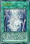 | 光之引导 | [魔法|装备] ①：自己场上没有其他的「光之引导」存在，自己墓地有「青眼」怪兽3只以上存在的场合，以那之内的1只为对象才能把这张卡发动。那只怪兽效果无效特殊召唤，把这张卡装备。这张卡从场上离开时那只怪兽除外。 ②：装备怪兽以外的自己怪兽不能攻击，自己墓地有「青眼」怪兽存在的场合，装备怪兽在同1次的战斗阶段中可以作出最多有那个数量的攻击。 |
| 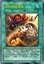 | 无形噬体感染 | [魔法|永续] 「无形噬体感染」的②的效果1回合只能使用1次。 ①：场上的「无形噬体」怪兽的攻击力·守备力上升场上的「无形噬体」卡数量×100。 ②：自己的手卡·场上的怪兽被解放的场合或者被战斗·效果破坏的场合才能发动。从卡组把1张「无形噬体」卡加入手卡。 |
| 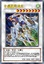 | 水晶翼同调龙 | [怪兽|效果|同调] 龙/风 [★8] 3000/2500 调整＋调整以外的同调怪兽1只以上 ①：1回合1次，这张卡以外的怪兽的效果发动时才能发动。那个发动无效并破坏。这个效果破坏怪兽的场合，这张卡的攻击力直到回合结束时上升这个效果破坏的怪兽的原本攻击力数值。 ②：这张卡和5星以上的对方怪兽进行战斗的伤害计算时发动。这张卡的攻击力只在那次伤害计算时上升进行战斗的对方怪兽的攻击力数值。 |
| 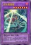 | 月光舞猫姬 | [怪兽|效果|融合] 兽战士/暗 [★7] 2400/2000 「月光」怪兽×2 ①：这张卡不会被战斗破坏。 ②：1回合1次，自己主要阶段1把这张卡以外的自己场上1只「月光」怪兽解放才能发动。这个回合，对方怪兽各有1次不会被战斗破坏，这张卡可以向全部对方怪兽各作2次攻击。 ③：这张卡的攻击宣言时发动。给与对方100伤害。 |
| 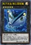 | 电子光虫-核心菜粉蝶 | [怪兽|效果|超量] 昆虫/光 [☆5] 2200/1800 昆虫族·光属性5星怪兽×2只以上 这张卡也能从自己场上的3·4阶的昆虫族超量怪兽把2个超量素材取除，在那只超量怪兽上面重叠来超量召唤。 ①：1回合1次，把这张卡1个超量素材取除，以对方场上1只守备表示怪兽为对象才能发动。那只怪兽回到持有者卡组。 ②：1回合1次，场上的怪兽的表示形式变更的场合才能发动。选自己墓地1只昆虫族怪兽在这张卡下面重叠作为超量素材。 |
| 升阶魔法-跳越之力 | [魔法] ①：以自己场上1只「急袭猛禽」超量怪兽为对象才能发动。比那只怪兽阶级高2阶的1只「急袭猛禽」怪兽在作为对象的自己怪兽上面重叠当作超量召唤从额外卡组特殊召唤。 ②：从自己墓地把这张卡和1只「急袭猛禽」怪兽除外，以自己墓地1只「急袭猛禽」超量怪兽为对象才能发动。那只怪兽特殊召唤。这个效果在这张卡送去墓地的回合不能发动。 | |
| 融合识别 | [魔法] ①：以自己场上1只怪兽为对象才能发动。把额外卡组1只融合怪兽给对方观看。这个回合，把作为对象的怪兽作为融合素材的场合，可以作为那只给人观看的怪兽的同名卡来成为融合素材。 | |
| 疾行机人 电电大公 | [怪兽|效果|调整] 机械/风 [★3] 1000/1000 「疾行机人 电电大公」的效果1回合只能使用1次。 ①：把墓地的这张卡除外才能发动。从自己的手卡·墓地选「疾行机人 电电大公」以外的1只「疾行机人」调整特殊召唤。 | |
| 娱乐伙伴 异色眼光凤凰 | [怪兽|效果|灵摆] 鸟兽/光 [★5] 2000/1000 3/3 ←3 【灵摆】 3→ ①：另一边的自己的灵摆区域有卡存在的场合，对方怪兽的直接攻击宣言时才能发动。另一边的自己的灵摆区域的卡破坏，这张卡特殊召唤。 【怪兽效果】 ①：把这张卡解放，以自己场上1只「娱乐伙伴」怪兽为对象才能发动。那只怪兽的攻击力直到回合结束时上升1000。这个效果在对方回合也能发动。 | |
| 青眼精灵龙 | [怪兽|效果|同调] 龙/光 [★9] 2500/3000 调整＋调整以外的「青眼」怪兽1只以上 ①：只要这张卡在怪兽区域存在，双方不能把2只以上的怪兽同时特殊召唤。 ②：1回合1次，墓地的卡的效果发动时才能发动。那个发动无效。 ③：把同调召唤的这张卡解放才能发动。从额外卡组把「青眼精灵龙」以外的1只龙族·光属性的同调怪兽守备表示特殊召唤。那只怪兽在这个回合的结束阶段破坏。这个效果在对方回合也能发动。 | |
 | 古生物 奇虾 | [怪兽|效果|超量] 水/水 [☆2] 2400/0 2星怪兽×3只以上 ①：这张卡不受其他怪兽的效果影响。 ②：1回合1次，自己的魔法与陷阱区域的陷阱卡被送去墓地的场合才能发动。自己卡组最上面的卡翻开，那是陷阱卡的场合，加入手卡。不是的场合，送去墓地。 ③：这张卡有陷阱卡在作为超量素材的场合，1回合1次，把这张卡1个超量素材取除，以场上1张卡为对象才能发动。那张卡破坏。这个效果在对方回合也能发动。 |
 | 古生物 怪诞虫 | [陷阱] ①：以场上1只表侧表示怪兽为对象才能发动。那只怪兽的攻击力·守备力直到回合结束时变成一半。 ②：场上的陷阱卡发动时，连锁那个发动这个效果才能从墓地发动。这张卡变成通常怪兽（水族·水·2星·攻1200/守0）在怪兽区域特殊召唤（不当作陷阱卡使用）。这个效果特殊召唤的这张卡不受怪兽的效果影响，从场上离开的场合除外。 |
| 浮幽樱 | [怪兽|效果|调整] 不死/暗 [★3] 0/1800 「浮幽樱」的效果1回合只能使用1次。 ①：对方场上的怪兽数量比自己场上的怪兽多的场合，把这张卡从手卡丢弃才能发动。选自己的额外卡组1张卡给双方确认。那之后，把对方的额外卡组确认，有选的卡的同名卡的场合，那些对方的同名卡全部除外。这个效果在对方回合也能发动。 | |
| 骰子独眼巨人 | [怪兽|效果] 机械/炎 [★4] 1800/200 ①：1回合1次，自己主要阶段才能发动。掷1次骰子，出现的数目的效果适用。 ●1：把对方手卡确认，从那之中选1张卡丢弃。 ●2～5：选自己1张手卡丢弃。 ●6：自己手卡全部丢弃。 | |
| 龙大神 | [怪兽|效果] 幻龙/光 [★8] 2900/1200 ①：对方对怪兽的特殊召唤成功的场合发动。对方选额外卡组1张卡送去墓地。 | |
| 星灭大怪兽 吉祖基鲁 | [怪兽|效果] 机械/光 [★10] 3300/2600 可以把对方场上1只怪兽解放，从手卡把这张卡在对方场上攻击表示特殊召唤。对方场上有「大怪兽」怪兽存在的场合，可以从手卡把这张卡攻击表示特殊召唤。「大怪兽」怪兽在自己场上只能有1只表侧表示存在。在自己或者对方回合，只以场上的卡1张为对象的魔法·陷阱·怪兽的效果发动时：可以把场上3个大怪兽指示物取除；那个效果无效，可以破坏场上1张卡。 | |
| 星兹暗黑星食者 | [怪兽|效果] 机械/暗 [★9] 3000/2600 不能成为对方的卡的效果的对象。在自己或者对方回合，陷阱卡发动时：可以把墓地的1只「星兹」怪兽除外；那个发动无效并破坏。这张卡被战斗或者卡的效果破坏送去墓地的场合：可以把墓地的这张卡除外；从卡组把1只8星以下的「星兹」怪兽加入手卡。 | |
| 星兹铁罐人 | [怪兽|效果] 念动力/光 [★1] 0/0 在自己或者对方回合：可以把这张卡除外；从手卡把1只2星以上的「星兹」怪兽特殊召唤。「星兹铁罐人」的这个效果1回合只能使用1次。1回合1次，在结束阶段时：可以支付500基本分；从卡组把3张卡名不同的「星兹」卡给对方观看，对方从那之中随机选1张加入自己手卡，把剩余送去墓地。 | |
 | 古生物 马尔三叶形虫 | [陷阱] ①：从卡组把1张陷阱卡送去墓地。 ②：场上的陷阱卡发动时，连锁那个发动这个效果才能从墓地发动。这张卡变成通常怪兽（水族·水·2星·攻1200/守0）在怪兽区域特殊召唤（不当作陷阱卡使用）。这个效果特殊召唤的这张卡不受怪兽的效果影响，从场上离开的场合除外。 |
| 电子光虫-比特蜈蚣 | [怪兽|效果] 昆虫/光 [★3] 1500/500 把这张卡作为超量召唤的素材的场合，不是昆虫族怪兽的超量召唤不能使用。 ①：1回合1次，表侧攻击表示的这张卡变成守备表示时才能发动。从卡组把1只昆虫族·3星怪兽守备表示特殊召唤。 ②：场上的这张卡为素材作超量召唤的怪兽得到以下效果。 ●这张卡可以向对方场上的全部守备表示怪兽各作1次攻击。 | |
| 无形噬体·虚饰 | [怪兽|效果|灵摆] 龙/地 [★8] 2750/0 5/5 ←5 【灵摆】 5→ 这张卡的控制者在每次自己准备阶段把自己场上1只怪兽解放。或者不解放让这张卡破坏。 ①：只要自己场上有「无形噬体」怪兽存在，「无形噬体」卡以外的被送去双方墓地的卡不去墓地而除外。 【怪兽效果】 ①：只要这张卡在怪兽区域存在，双方不是「无形噬体」怪兽不能从额外卡组特殊召唤。 | |
| 无形噬体·色欲 | [怪兽|效果|灵摆] 龙/地 [★2] 1350/0 5/5 ←5 【灵摆】 5→ 这张卡的控制者在每次自己准备阶段把自己场上1只怪兽解放。或者不解放让这张卡破坏。 ①：只要自己场上有「无形噬体」怪兽存在，双方不能把「无形噬体」卡以外的魔法卡的效果发动。 【怪兽效果】 ①：只要灵摆召唤·反转过的这张卡在怪兽区域存在，双方不是「无形噬体」怪兽不能从额外卡组特殊召唤。 | |
| 太古的白石 | [怪兽|效果|调整] 龙/光 [★1] 600/500 「太古的白石」的②的效果1回合只能使用1次。 ①：这张卡被送去墓地的回合的结束阶段才能发动。从卡组把1只「青眼」怪兽特殊召唤。 ②：把墓地的这张卡除外，以自己墓地1只「青眼」怪兽为对象才能发动。那只怪兽加入手卡。 | |
| 不可动摇的牵绊 | [陷阱|反击] ①：灵摆怪兽的效果或者已在灵摆区域存在的卡的效果由对方发动时才能发动。那个发动无效并除外。 | |
| 青色眼睛的护人 | [怪兽|效果|调整] 魔法师/光 [★1] 800/1300 「青色眼睛的护人」的②的效果1回合只能使用1次。 ①：这张卡召唤成功时才能发动。从手卡把1只光属性·1星调整特殊召唤。 ②：以自己场上1只效果怪兽为对象才能发动。那只怪兽送去墓地，从手卡把1只「青眼」怪兽特殊召唤。 | |
| 奇妙超量 | [陷阱] ①：用自己场上的怪兽为素材把1只超量怪兽超量召唤。 | |
| 急袭猛禽-推进林鸮 | [怪兽|效果] 鸟兽/暗 [★4] 100/1700 ①：自己的「急袭猛禽」怪兽被选择作为对方怪兽的攻击对象时，把这张卡从手卡除外才能发动。那只攻击怪兽破坏。 | |
| 雾动机龙喷发 | [陷阱] ①：自己场上的「雾动机龙」怪兽被战斗·效果破坏的场合，以对方场上1张卡为对象才能发动。那张卡破坏。 | |
| 无形噬体·愤怒 | [怪兽|效果|灵摆] 龙/地 [★4] 1650/0 3/3 ←3 【灵摆】 3→ 这张卡的控制者在每次自己准备阶段把自己场上1只怪兽解放。或者不解放让这张卡破坏。 ①：只要自己场上有「无形噬体」怪兽存在，双方不能把「无形噬体」怪兽以外的怪兽解放。 【怪兽效果】 ①：只要灵摆召唤·反转过的这张卡在怪兽区域存在，双方不是「无形噬体」怪兽不能从额外卡组特殊召唤。 | |
| 月光虎 | [怪兽|效果|灵摆] 兽战士/光 [★3] 1200/800 5/5 ←5 【灵摆】 5→ ①：1回合1次，以自己墓地1只「月光」怪兽为对象才能发动。那只怪兽特殊召唤。这个效果特殊召唤的怪兽不能攻击，效果无效化，结束阶段破坏。 【怪兽效果】 「月光虎」的怪兽效果1回合只能使用1次。 ①：场上的这张卡被战斗·效果破坏的场合，以自己墓地1只「月光」怪兽为对象才能发动。那只怪兽特殊召唤。 | |
| 月光白兔 | [怪兽|效果] 兽战士/暗 [★2] 800/800 ①：这张卡召唤成功时，以「月光白兔」以外的自己墓地1只「月光」怪兽为对象才能发动。那只怪兽守备表示特殊召唤。 ②：1回合1次，以最多有这张卡以外的自己场上的「月光」卡数量的对方场上的魔法·陷阱卡为对象才能发动。那些卡回到持有者手卡。 | |
 | 电子光虫-总线独角仙 | [怪兽|效果|超量] 昆虫/光 [☆7] 2600/2200 昆虫族·光属性7星怪兽×2只以上 这张卡也能从自己场上的5·6阶的昆虫族超量怪兽把2个超量素材取除，在那只超量怪兽上面重叠来超量召唤。 ①：这张卡向守备表示怪兽攻击的场合，给与攻击力超过那个守备力的数值的战斗伤害。 ②：1回合1次，把这张卡1个超量素材取除才能发动。对方场上的守备力最高的怪兽破坏。这个效果在对方回合也能发动。 |
| 疾行机人 弹珠机卡丁车 | [怪兽|效果] 机械/风 [★4] 1800/1000 ①：1回合1次，从手卡丢弃1只机械族怪兽，以场上1只怪兽为对象才能发动。那只怪兽破坏。 | |
| 再生骰子 | [陷阱] ①：以自己墓地1只「疾行机人」调整为对象才能发动。那只怪兽效果无效特殊召唤，掷1次骰子。那只特殊召唤的怪兽直到回合结束时变成和出现的数目相同等级。 ②：把墓地的这张卡除外才能发动。用自己场上的包含「疾行机人」调整的怪兽为素材，把1只风属性同调怪兽同调召唤。 | |
| 调整欣快跑 | [魔法] ①：从手卡丢弃1只怪兽才能发动。和那只怪兽相同种族·属性而等级高1星的1只调整从卡组特殊召唤。 | |
| 娱乐伙伴 异色眼独角兽 | [怪兽|效果|灵摆] 兽/光 [★1] 100/600 8/8 ←8 【灵摆】 8→ ①：只在这张卡在灵摆区域存在才有1次，自己的「异色眼」怪兽的攻击宣言时，以那只怪兽以外的自己场上1只「娱乐伙伴」怪兽为对象才能发动。那只攻击怪兽的攻击力直到战斗阶段结束时上升作为对象的怪兽的原本攻击力数值。 【怪兽效果】 ①：这张卡召唤·特殊召唤成功时，以自己墓地1只「娱乐伙伴」怪兽为对象才能发动。自己回复那只怪兽的攻击力数值的基本分。 | |
| 急袭猛禽-究极猎鹰 | [怪兽|效果|超量] 鸟兽/暗 [☆10] 3500/2000 鸟兽族10星怪兽×3 ①：这张卡不受其他卡的效果影响。 ②：把这张卡1个超量素材取除才能发动。这个回合，对方场上的怪兽的攻击力下降1000，对方不能把卡的效果发动。 ③：这张卡有「急袭猛禽」怪兽在作为超量素材的场合，得到以下效果。 ●每次双方的结束阶段才能发动。对方场上的怪兽的攻击力下降1000。对方场上没有表侧表示怪兽存在的场合，给与对方1000伤害。 | |
| 光虫基盘 | [魔法|场地] 「光虫基盘」的②的效果1回合只能使用1次。 ①：自己场上的昆虫族怪兽的攻击力·守备力上升300。 ②：以自己场上1只昆虫族超量怪兽为对象才能发动。把手卡1只昆虫族怪兽在那只怪兽下面重叠作为超量素材。 | |
| 高速疾行机人 快刀乱破智游 | [怪兽|效果|同调] 机械/风 [★4] 1300/1600 调整＋调整以外的怪兽1只以上 ①：这张卡和特殊召唤的怪兽进行战斗的伤害步骤开始时才能发动。这张卡的攻击力直到那次伤害步骤结束时变成2倍。 ②：同调召唤的这张卡被送去墓地的回合的结束阶段，以「高速疾行机人 快刀乱破智游」以外的自己墓地1只「疾行机人」怪兽为对象才能发动。那只怪兽加入手卡。 | |
| 真龙的觉醒 | [魔法] ①：「龙魔王」怪兽以及除灵摆怪兽以外的「龙剑士」怪兽在场上存在的场合才能发动。双方场上的卡全部回到持有者卡组。那之后，可以从卡组把1只「龙剑士」怪兽或者「龙魔王」怪兽无视召唤条件特殊召唤。 | |
| 曼陀罗天使号手 | [怪兽|通常|调整] 植物/地 [★4] 1900/1600 如天使般的美丽之花。不断产生雾来迷惑侵入者，不允许进入到圣兽们居住的森林最深处。 | |
| 天魔大帝 | [怪兽|效果] 战士/暗 [★5] 2400/1000 ①：只要这张卡在怪兽区域存在，对方不能对应通常召唤的怪兽的效果的发动把魔法·陷阱·怪兽的效果发动。 | |
| 星兹魔力 | [陷阱] 选择自己场上1只「星兹」怪兽；破坏那只怪兽，把对方的场上或者墓地的1张卡除外。「星兹魔力」在1回合只能发动1张。 | |
| 电子光虫-焊料织网蛛 | [怪兽|效果] 昆虫/光 [★3] 500/1500 把这张卡作为超量召唤的素材的场合，不是昆虫族怪兽的超量召唤不能使用。 ①：1回合1次，以自己场上1只表侧攻击表示怪兽为对象才能发动。那只怪兽变成守备表示，从手卡把1只昆虫族·3星怪兽守备表示特殊召唤。 ②：场上的这张卡为素材作超量召唤的怪兽得到以下效果。 ●这次超量召唤成功的场合发动。对方场上的全部表侧表示怪兽守备力变成0，变成守备表示。 | |
| 月光舞豹姬 | [怪兽|效果|融合] 兽战士/暗 [★8] 2800/2500 「月光舞猫姬」＋「月光」怪兽 这张卡用以上记的卡为融合素材的融合召唤才能从额外卡组特殊召唤。 ①：这张卡不会被对方的效果破坏。 ②：1回合1次，自己主要阶段1才能发动。这个回合，对方怪兽各有1次不会被战斗破坏，这张卡可以向全部对方怪兽各作2次攻击。 ③：这张卡战斗破坏对方怪兽时发动。这张卡的攻击力直到战斗阶段结束时上升200。 | |
| 虚龙魔王 无形矢·心灵 | [怪兽|效果|仪式] 龙/地 [★8] 2950/2500 「无形阵·假面」降临。 ①：这张卡仪式召唤成功的场合，下次的对方回合的主要阶段1跳过。 ②：只要这张卡在怪兽区域存在，场上的表侧表示的融合·同调·超量怪兽的效果无效化。 ③：这张卡从场上送去墓地的场合才能发动。从卡组把「虚龙魔王 无形矢·心灵」以外的1只「龙魔王」怪兽加入手卡。 | |
 | 古生物 加拿大虫 | [陷阱] ①：以对方场上1只表侧表示怪兽为对象才能发动。那只怪兽变成里侧守备表示。 ②：场上的陷阱卡发动时，连锁那个发动这个效果才能从墓地发动。这张卡变成通常怪兽（水族·水·2星·攻1200/守0）在怪兽区域特殊召唤（不当作陷阱卡使用）。这个效果特殊召唤的这张卡不受怪兽的效果影响，从场上离开的场合除外。 |
| 修禅僧 元道 | [怪兽|效果] 魔法师/水 [★4] 300/1800 ①：只要这张卡在怪兽区域存在，场上的表侧攻击表示怪兽不能把效果发动。 ②：守备表示的这张卡不会成为卡的效果的对象，不会被效果破坏。 | |
| 大怪兽的休眠中断 | [魔法] 破坏场上的全部怪兽，之后从卡组把2只卡名不同的「大怪兽」怪兽在自己以及对方场上各1只攻击表示特殊召唤，那些怪兽不能把表示形式变更，可以攻击的场合必须作出攻击。这张卡送去墓地的回合以外的自己主要阶段时：可以把墓地的这张卡除外；从卡组把1只「大怪兽」怪兽加入手卡。「大怪兽的休眠中断」在1回合只能发动1张。 |